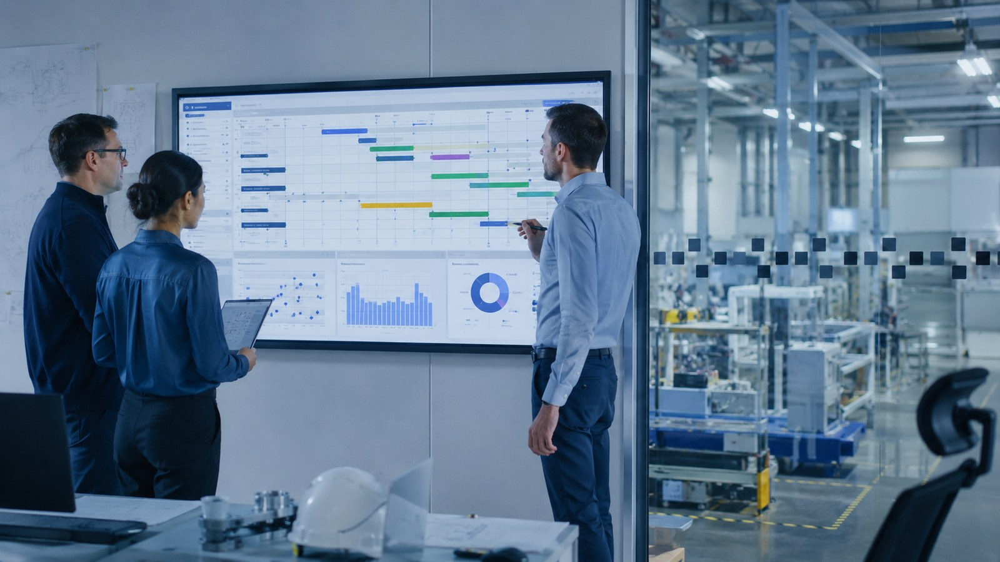

| Tres competencias útiles: | Dos ventajas: | Dos aspectos que conviene valorar: |
|---|---|---|
| Capacidad de análisis e interpretación de datos. | Es un perfil demandado por empresas de distintos sectores. | Requiere formación continua en programas y tecnologías de análisis. |
| Conocimientos de estadística y herramientas digitales. | Permite participar en decisiones estratégicas y mejorar los resultados empresariales. | Puede implicar trabajar durante largos periodos con datos y tareas que exigen mucha precisión. |
| Pensamiento crítico y resolución de problemas. |
Foto analista de datos
| Tres competencias útiles: | Dos ventajas: | Dos aspectos que conviene valorar: |
|---|---|---|
| Conocimientos tecnológicos y digitales. | Es un sector con oportunidades de crecimiento profesional. | Exige actualizar constantemente los conocimientos tecnológicos. |
| Capacidad de adaptación al cambio. | Permite trabajar con tecnologías innovadoras y participar en proyectos variados. | La implantación de cambios puede generar dificultades y resistencia entre los trabajadores. |
| Comunicación y trabajo en equipo. |
Foto transformacion digital
| Tres competencias útiles: | Dos ventajas: | Dos aspectos que conviene valorar: |
|---|---|---|
| Organización y planificación. | Ofrece posibilidades de trabajar en diferentes sectores empresariales. | Puede implicar presión para cumplir plazos y objetivos. |
| Capacidad para resolver problemas. | Permite adquirir experiencia en gestión y organización de empresas. | Requiere gestionar imprevistos y coordinar diferentes tareas y equipos. |
| Coordinación y trabajo en equipo. |

Foto tecnico de planificacion
Conclusion salidas UIE
Conclusión Las tres profesiones están relacionadas con la mejora y el funcionamiento de las empresas, pero cada una tiene un enfoque diferente. El analista de datos y procesos empresariales es más adecuado para personas analíticas, a las que les gusta trabajar con números, estadísticas y resolver problemas. El técnico de transformación digital encaja mejor con perfiles interesados en la tecnología, la innovación y la adaptación a los cambios. Por último, el técnico de planificación y operaciones es ideal para personas organizadas, responsables y con capacidad de coordinación. En definitiva, las tres opciones ofrecen oportunidades profesionales, pero dependen de los intereses y habilidades de cada persona.
Grado de Ingeniería en Organización Industrial (UVigo)
| Tres competencias útiles: | Dos ventajas: | Dos aspectos que conviene valorar: |
|---|---|---|
| Capacidad de organización y planificación. | Ofrece oportunidades laborales en diferentes sectores industriales. | Puede implicar una gran responsabilidad para cumplir los objetivos y plazos de producción. |
| Conocimientos de producción y procesos industriales. | Permite participar en la mejora de los procesos de fabricación y aumentar la productividad. | Requiere resolver problemas e imprevistos que pueden afectar al funcionamiento de la fábrica. |
| Capacidad de análisis y resolución de problemas. |
Foto ingeniero produccion
| Tres competencias útiles: | Dos ventajas: | Dos aspectos que conviene valorar: |
|---|---|---|
| Organización y planificación. | Tiene oportunidades laborales en empresas de distintos sectores. | Puede generar presión cuando se producen retrasos o problemas con los proveedores. |
| Capacidad de coordinación y comunicación. | Permite desarrollar habilidades de gestión, coordinación y organización. | Requiere controlar constantemente los materiales, los pedidos y los plazos de entrega. |
| Conocimientos de gestión de inventarios y distribución. |
Foto tecnico de logistica
| Tres competencias útiles: | Dos ventajas: | Dos aspectos que conviene valorar: |
|---|---|---|
| Atención al detalle y precisión. | Permite trabajar en diferentes sectores industriales y empresariales. | Requiere mucha atención y responsabilidad para detectar posibles fallos. |
| Capacidad de análisis y resolución de problemas. | Ofrece la posibilidad de mejorar los productos y reducir errores. | Puede implicar realizar controles y revisiones repetitivas. |
| Conocimientos de control de calidad y mejora de procesos. |
Foto ingeniero de claidad
Conclusión salidas UVigo
Las tres profesiones están relacionadas con la organización y la mejora de los procesos industriales, pero cada una tiene un enfoque diferente. El ingeniero de producción es más adecuado para personas organizadas y analíticas, a las que les gusta planificar y optimizar los procesos de fabricación. El técnico de logística encaja mejor con perfiles responsables, planificadores y con capacidad para coordinar materiales y entregas. Por último, el técnico de calidad y mejora continua es ideal para personas detallistas, críticas y con interés en detectar errores y mejorar los procesos. En definitiva, las tres opciones ofrecen oportunidades profesionales en el sector industrial, pero dependen de los intereses y habilidades de cada persona.
Grado de Ingeniería en Organización Industrial (Mondragon)
| Tres competencias útiles: | Dos ventajas: | Dos aspectos que conviene valorar: |
|---|---|---|
| Liderazgo y coordinación de equipos. | Permite desarrollar habilidades de dirección y gestión de equipos. | Puede implicar bastante presión para cumplir los plazos y objetivos de fabricación. |
| Organización y planificación de la producción. | Ofrece oportunidades profesionales en diferentes empresas industriales. | Requiere asumir responsabilidades y solucionar imprevistos relacionados con la producción. |
| Capacidad para tomar decisiones y resolver problemas. |
Foto jefe de produccion
| Tres competencias útiles: | Dos ventajas: | Dos aspectos que conviene valorar: |
|---|---|---|
| Capacidad de negociación y comunicación. | Permite trabajar en empresas de diferentes sectores. | Puede haber dificultades cuando los proveedores no cumplen los plazos de entrega. |
| Organización y planificación. | Ayuda a desarrollar habilidades de negociación y gestión económica. | Requiere controlar los costes y buscar constantemente buenas condiciones de compra. |
| Conocimientos de gestión de compras y proveedores. |

Foto responsable de compras
| Tres competencias útiles: | Dos ventajas: | Dos aspectos que conviene valorar: |
|---|---|---|
| Atención al detalle y precisión. | Ofrece oportunidades laborales en numerosos sectores industriales. | Requiere mucha responsabilidad para garantizar que se cumplen los estándares de calidad. |
| Capacidad de análisis y pensamiento crítico. | Permite contribuir a mejorar los productos y procesos de una empresa. | Puede implicar realizar inspecciones, controles y revisiones frecuentes. |
| Conocimientos de control de calidad y normativa. |
Foto tecnico de calidad alimentaria
Conclusión salidas Mondragon
Las tres profesiones están relacionadas con la gestión y el buen funcionamiento de las empresas industriales, pero cada una tiene responsabilidades diferentes. El responsable de producción es más adecuado para personas con capacidad de liderazgo, organización y coordinación de equipos. El técnico de compras y aprovisionamiento encaja mejor con perfiles comunicativos, organizados y con habilidades de negociación. Por último, el técnico de calidad es ideal para personas detallistas, responsables y con capacidad de análisis para detectar fallos y proponer mejoras. En definitiva, las tres opciones ofrecen diferentes oportunidades laborales en el ámbito industrial y permiten desarrollar habilidades profesionales variadas, dependiendo de los intereses y capacidades de cada persona.